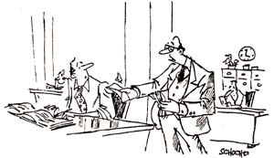

The ten most powerful Western nations (Japan included) met at an economic summit in Williamsburg, Virginia, in May. Information as to their conclusions and plans released after the meeting was meaningless. So we have been watching for clues to what really transpired. Now we have the first clue . . . the announcement of a new currency, the exchange probably to take place early in 1985. The reason offered is that counterfeiting has now become a serious problem. We can think of several other reasons. Black market dollars, involved in drug traffic and other illicit activities, are probably fully as important. But undoubtedly of far greater concern is the huge, largely untaxed, worldwide underground economy.
The purpose of the currency exchange, then, is first to mobilize the billions of dollars in fifty and one hundred dollar bills around the globe. Once a date for the exchange is announced, they will have to be spent . . . and taxed. Second, this massive infusion of new money may be being timed to abort the next downturn in the business cycle and keep the economic recovery going. Third, to provide an opportunity to gain greater control over the underground economy in the future. How? The sudden increase in tax revenue could permit a reduction in the income tax, encouraging many who have been evading taxes to come back into the fold; next, change. of emphasis to a new "value-added" tax (a nationwide sales tax) would also effectively increase the tax take from the remaining underground economy as all retail purchases are taxed. The most important reason, however, is to allow slack for another round of years of inflation, necessary to continue the international debt scam. Inflation is, of course, another layer of taxation. Keep the economy booming, and nobody will object.
What will the exchange rate be? A onefor-one could prove to be insufficient, with a resumption of exponential inflation a few years from now making a 1 to 100 exchange necessary. From the point of view of those who will make the decision, we think 1 to 10 (one new dollar for ten old dollars) would be favored. The psychological effect would be far ranging. It will appear possible to pay a debt denominated in billions rather than trillions. This will encourage people to spend again. There will result a BOOM in the economy. There will be a substantial drop in interest rates. The budget will be balanced, the national debt reduced. The stock market will soar to Dow 200 (not 2000, if the rate is 1 to 10).
Who will benefit? The U.S. Treasury, the international bankers. It will appear possible to retain the huge international debt structure and the great banks' enormous interest income. And it will work, but only for a time.
The effects? At first it will appear that at one stroke stability has been restored. Dime hamburgers and nickel Cokes will be very reassuring. But there will be many who will recognize the con when it is announced. They will slip in increases in prices wherever possible. A new round of inflation will be under way immediately, although briefly a deflation will appear to be in effect. It is at this point you should plan to profit. At first, sell all hard assets and foreign currencies and bonds. When they bottom, buy. Buy gold, buy silver, buy collectibles . . . internationally. It cannot work for long, and the next round of inflation will be even more powerful for having been delayed.
While we're speculating, let's consider one more possibility. Already there is conjecture that "The Currency Reform Act of 1985" could abolish the Federal Reserve System, and create one central bank . . . a role most likely to be taken by the New York Federal Reserve Bank. It is intriguing to postulate that an even bolder step toward an international currency is being considered: the initiation of an international central bank unit. After all, we've already been told that all ten nations will be cooperating. How does it sound? A new World Peace Dollar! The Eurodollar problem would disappear. All international trade-not just oil and gold and debt-would be denominated in the new dollar. The potential for people control is limitless. Metallic threads in the currency would register on airport scanning devices. An international serial identification number on each bill would permit tracing movements. It has been fashionable lately to write articles saying George Orwell was off the mark with his visions of Big Brother government. But it appears 1984 is arriving on schedule.
|
 |
|
|